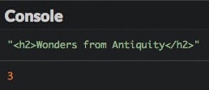
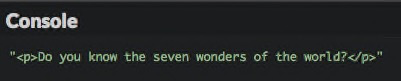
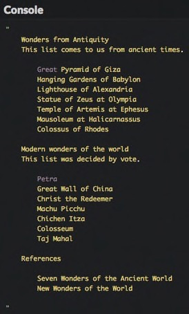
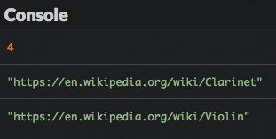
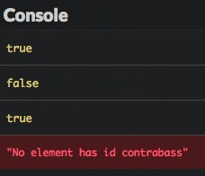

Traverse the DOM
In this chapter, you'll see how to use JavaScript to traverse the DOM.
Sample web page
Here's the example web page used throughout this chapter.
<h1>Seven wonders of the world</h1>
<p>Do you know the seven wonders of the world?</p>
<div id="content">
<h2>Wonders from Antiquity</h2>
<p>This list comes to us from ancient times.</p>
<ul class="wonders" id="ancient">
<li class="exists">Great Pyramid of Giza</li>
<li>Hanging Gardens of Babylon</li>
<li>Lighthouse of Alexandria</li>
<li>Statue of Zeus at Olympia</li>
<li>Temple of Artemis at Ephesus</li>
<li>Mausoleum at Halicarnassus</li>
<li>Colossus of Rhodes</li>
</ul>
<h2>Modern wonders of the world</h2>
<p>This list was decided by vote.</p>
<ul class="wonders" id="new">
<li class="exists">Petra</li>
<li class="exists">Great Wall of China</li>
<Li class="exists">Christ the Redeemer</Li>
<Li class="exists">Machu Picchu</Li>
<li class="exists">Chichen Itza</li>
<li class="exists">Colosseum</li>
<li class="exists">Taj Mahal</li>
</ul>
<h2>References</h2>
<ul>
<li><a href="https://en.wikipedia.org/wiki/Seven_Wonders_of_the_Ancient_World">Seven Wonders of the Ancient World</a></li>
<li><a href="https://en.wikipedia.org/wiki/New7Wonders_of_the_World">New Wonders of the World</a></li>
</ul>
</div>
Selecting elements
The limits of node-by-node traversal
In the previous chapter, you saw how to navigate the DOM node structure of a web page beginning with the root node and using the childNodes property to move down levels in the structure of the page.
Suppose you want to select the title "Wonders from Antiquity" of our web page. Taking into account the text nodes between elements, this node is the second child node of the sixth child node of the body element. So you could write something like this.
// Show the "Wonders from Antiquity" h2 element
console.log(document.body.childNodes[5].childNodes[1]);

This technique is pretty awkward and error-prone. The code is difficult to read and must be updated if new elements are further inserted in the web page. Fortunately, there are much better solutions.
Selecting items according to HTML tag
All DOM elements have a method called getElementsByTagName(). This returns, under the form of a NodeList object, a list of items that have the name of the tag that's passed as a parameter. The search happens through all the sub-elements of the node on which the method is called -- not only its direct children.
With the getElementsByTagName() method, selecting the first h2 element becomes super easy:
// Get all h2 elements into an array
const titleElements = document.getElementsByTagName("h2");
console.log(titleElements[0]); // Show the first h2
console.log(titleElements.length); // 3 (total number of h2 elements in the page)

Tip
Suffixing JavaScript variables associated to DOM element nodes with Element (or Elements when the variable contains several nodes) is a popular naming convention. We'll stick to it throughout this book.
Selecting items according to class
DOM elements also feature a method called getElementsByClassName(). This method returns a NodeList object of elements with the class name as a parameter. Again, the search covers all sub-elements of the node on which the method is called.
It's important to note that NodeList objects are not real JavaScript arrays, so not all array operations are applicable to them. To turn a NodeList object into an array, use the Array.from() method.
To select and display all document elements with a class "exists", you can write the following code.
// Show all elements that have the class "exists"
const existingElements = Array.from(document.getElementsByClassName("exists"));
existingElements.forEach(element => {
console.log(element);
});

Selecting an item according to its ID
Lastly, the document variable provides a method called getElementById() that returns the element with the specified ID among all elements of the document. It returns null if no associated element can be found.
The following code selects and displays the list with ID "new".

Warning
Beware: contrary to others, the getElementById() method does not contain any 's' after the word "Element".
Selecting elements via CSS selectors
For more complex use cases, you can also use CSS selectors to access DOM elements.
For example, let's say that you want to grab all the <li> elements of wonders that are both ancient and still exist.
// All "ancient" wonders that still exist
console.log(document.getElementById("ancient").getElementsByClassName("exists").length); // 1
This syntax is a little clunky though. Let's learn two new methods that make finding elements easier.
The first is querySelectorAll(), with which you can use CSS selectors to identify elements.
// All paragraphs
console.log(document.querySelectorAll("p").length); // 3
// All paragraphs inside the "content" ID block
console.log(document.querySelectorAll("#content p").length); // 2
// All elements with the "exists" class
console.log(document.querySelectorAll(".exists").length); // 8
// All "ancient" wonders that still exist
console.log(document.querySelectorAll("#ancient > .exists").length); // 1
Check the Mozilla Developer Network for a primer on the different CSS selectors available.
The second method using CSS selectors is called querySelector(). It works the same way as querySelectorAll() but only returns the first matching element. It returns null if no associated element can be found.

Choosing a selection method
You just discovered several ways of selecting DOM elements. How do you choose the right one?
Since they use CSS selectors, querySelectorAll() and querySelector() could cover all your needs, but they might perform slower than the others.
Here are the general rules of thumb that you should follow.
| Number of items to get | Selection criterion | Method to use |
|---|---|---|
| Many | By tag | getElementsByTagName() |
| Many | By class | getElementsByClassName() |
| Many | Not by class or tag | querySelectorAll() |
| Only one | By ID | getElementById() |
| Only one (the first) | Not by ID | querySelector() |
Obtaining information about elements
The DOM also provides information on the items you've just selected.
HTML content
The innerHTML property will retrieve the HTML content of your DOM element.
// The HTML content of the DOM element with ID "content"
console.log(document.getElementById("content").innerHTML);

This property has been introduced by Microsoft and is not part of the W3C DOM specification, but it is nonetheless supported by all major browsers.
Textual content
The textContent property returns all the text content of a DOM element, without any HTML markup.
// The textual content of the DOM element with ID "content"
console.log(document.getElementById("content").textContent);

Attributes
The getAttribute() method can be applied to a DOM element and will return the value of a given attribute.
// Show href attribute of the first link
console.log(document.querySelector("a").getAttribute("href"));

Some attributes are directly accessible as properties. This is true for the id, href, and value attributes.
// Show ID attribute of the first list
console.log(document.querySelector("ul").id);
// Show href attribute of the first link
console.log(document.querySelector("a").href);

You can check for the existence of an attribute using the hasAttribute() method as seen in the example below.
if (document.querySelector("a").hasAttribute("target")) {
console.log("The first link has a target attribute.");
} else {
console.log("The first link does not have a target attribute."); // Will be shown
}
Classes
In a web page, a tag can have multiple classes. The classList property retrieves a DOM element's list of classes.
// List of classes of the element identified by "ancient"
const classes = document.getElementById("ancient").classList;
console.log(classes.length); // 1 (since the element only has one class)
console.log(classes[0]); // "wonders"
You also have the opportunity to test the presence of a class on an element by calling the contains() method on the class list, passing the class to test as a parameter.
if (document.getElementById("ancient").classList.contains("wonders")) {
console.log("The element with ID 'ancient' has the class 'wonders'."); // Will be shown
} else {
console.log("The element with ID 'ancient' does not have the class 'wonders'.");
}
This is only a part of the DOM traversal API. For more details, check the Mozilla Developer Network.
TL;DR
-
Rather than go through the DOM node by node, you can quickly access one or more elements using selection methods.
-
The
getElementsByTagName(),getElementsByClassName()andgetElementById()methods respectively search items by tag name, class, and ID. The first two methods return a list, which can further be converted to an array withArray.from(). The latter method returns a single item. -
The
querySelectorAll()andquerySelector()methods make it possible to search for items using a CSS selector. The first method returns all matching items, and the second returns only the first. -
The
innerHTMLproperty returns the HTML content of an element. ThetextContentproperty returns its textual content without any HTML markup. -
The
getAttribute()andhasAttribute()methods allow access to element attributes. TheclassListproperty and its methodcontains()provides access to an element's classes.
Coding time!
Counting elements
Here is some HTML code (content is by French poet Paul Verlaine).
<h1>Mon rêve familier</h1>
<p>Je fais souvent ce rêve <span class="adjective">étrange</span> et <span class="adjective">pénétrant</span></p>
<p>D'une <span>femme <span class="adjective">inconnue</span></span>, et que j'aime, et qui m'aime</p>
<p>Et qui n'est, chaque fois, ni tout à fait la même</p>
<p>Ni tout à fait une autre, et m'aime et me comprend.</p>
Complete the following program to write the countElements() function, that takes a CSS selector as a parameter and returns the number of corresponding elements.
// TODO: write the countElements() function here
console.log(countElements("p")); // Should show 4
console.log(countElements(".adjective")); // Should show 3
console.log(countElements("p .adjective")); // Should show 3
console.log(countElements("p > .adjective")); // Should show 2
Handling attributes
Here is the description of several musical instruments.
<h1>Some musical instruments</h1>
<ul>
<li id="clarinet" class="wind woodwind">
The <a href="https://en.wikipedia.org/wiki/Clarinet">clarinet</a>
</li>
<li id="saxophone" class="wind woodwind">
The <a href="https://en.wikipedia.org/wiki/Saxophone">saxophone</a>
</li>
<li id="trumpet" class="wind brass">
The <a href="https://en.wikipedia.org/wiki/Trumpet">trumpet</a>
</li>
<li id="violin" class="chordophone">
The <a href="https://en.wikipedia.org/wiki/Violin">violin</a>
</li>
</ul>
Write a JavaScript program containing a linkInfo() function that shows:
- The total number of links.
- The target of the first and last links.
This function should work even if no links are present.

Add the following new instrument at the end of the HTML list, then check your program's new result.

Handling classes
Improve the previous program to add a has() function that tests if an element designated by its ID has a class. The function shows true, false or an error message if the element can’t be found.
// Show if an element has a class
const has = (id, someClass) => {
// TODO: write the function code
};
has("saxophone", "woodwind"); // Should show true
has("saxophone", "brass"); // Should show false
has("trumpet", "brass"); // Should show true
has("contrabass", "chordophone"); // Should show an error message
Use
console.error()rather thanconsole.log()to display an error message in the console.
